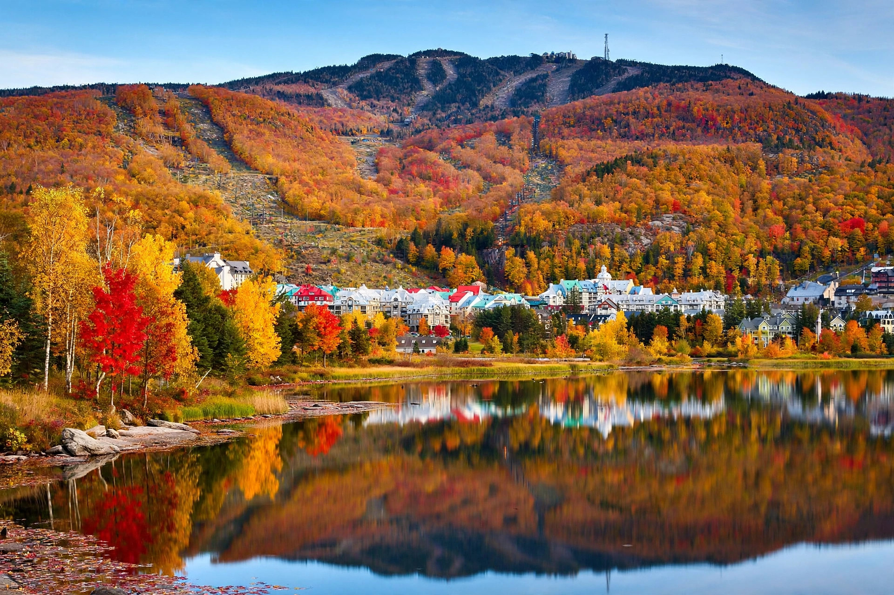

The Laurentians
Montreal's backyard mountains — ski hills, lake country, and the most famous fall colours in Quebec.

If Montreal has a cottage country, this is it. The Laurentians (Les Laurentides) rise just north of the city — a rolling range of the Canadian Shield covered in maple forest, dotted with lakes, and threaded by two of the prettiest drives in the province: Autoroute 15 up the spine of the region, and Route 117 pushing deeper into the highlands. For most Montrealers, "going up north" means here, and it has meant that for generations.
Saint-Sauveur and the lower Laurentians
About an hour north of Montreal on the 15, Saint-Sauveur is the Laurentians' village heart. Its main street, Rue Principale, is lined with boutiques, bistros, and cafés in old stone and wood buildings — busy in every season, but especially in autumn when the hills behind town ignite. Just west of the village, Sommet Saint-Sauveur runs one of the longest ski seasons in the region, famously stretching into spring with pond skimming and terrace après-ski. In summer the same hill becomes a water park and mountain-bike destination, which tells you everything about how this region does all four seasons.
Nearby Sainte-Adèle and Val-Morin sit on the old railway line that is now the P'tit Train du Nord trail — more on that in our outdoors guide — and make good bases if you want village life without the Saint-Sauveur crowds.
Mont-Tremblant: the resort and the mountain
Keep driving north and the hills get serious. Mont-Tremblant is the highest peak in the Laurentians and the anchor of the region. The resort village at its base — a pedestrian cluster of colourful buildings that looks imported from the Alps — is the province's biggest ski destination, with a gondola running year-round to the summit. In winter it's skiers and snowboarders; in summer it's the luge, the panoramic gondola, and hiking trails fanning out from the top.
Don't confuse the resort with the mountain's wilder side. Parc national du Mont-Tremblant, run by SEPAQ, wraps around the massif with old-growth forest, canoe routes on a chain of lakes, and backcountry huts. The park's La Roche and La Coulée trails are the classic day hikes, and the fall colour here — late September into early October — is the reason the region's hotels book out months ahead.
Fall colours: when and where
The Laurentians' maples turn in a wave that moves from north to south. The high country around Mont-Tremblant usually peaks in the last week of September; the lower villages around Saint-Sauveur follow in the first two weeks of October. Weekends are packed — if you can swing a weekday, do it. The Route 117 corridor north of Sainte-Agathe-des-Monts and the road up to the Mont-Tremblant park entrance are the two drives locals swear by.
Getting there
- From Montreal: Autoroute 15 north to Saint-Sauveur (about 60–75 minutes); continue to Sainte-Agathe-des-Monts and Mont-Tremblant (about 90 minutes to 2 hours).
- Route 117 is the scenic alternative north of Sainte-Agathe — slower, prettier, and the gateway to the national park.
- Best months: January–March for skiing, late September–mid October for colours, June–August for lakes and hiking.
- Good to know: the region is bilingual-friendly, but French is the working language — a few words go a long way in the smaller villages.
Beyond the big names
The Laurentians reward wandering. The village of Val-David, just south of Sainte-Agathe, has a long-standing artist community and the Parc régional de Val-David–Val-Morin, a beloved climbing and hiking spot. Further north, Mont-Laurier marks the end of the developed Laurentians and the start of real northern Quebec. And everywhere between, lakeside roads hide public beaches, small fromageries, and sugar shacks that open their doors in March and April for the maple season.
Planning a first visit? Our Laurentians Weekend itinerary strings the highlights into two or three days from Montreal.